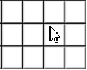
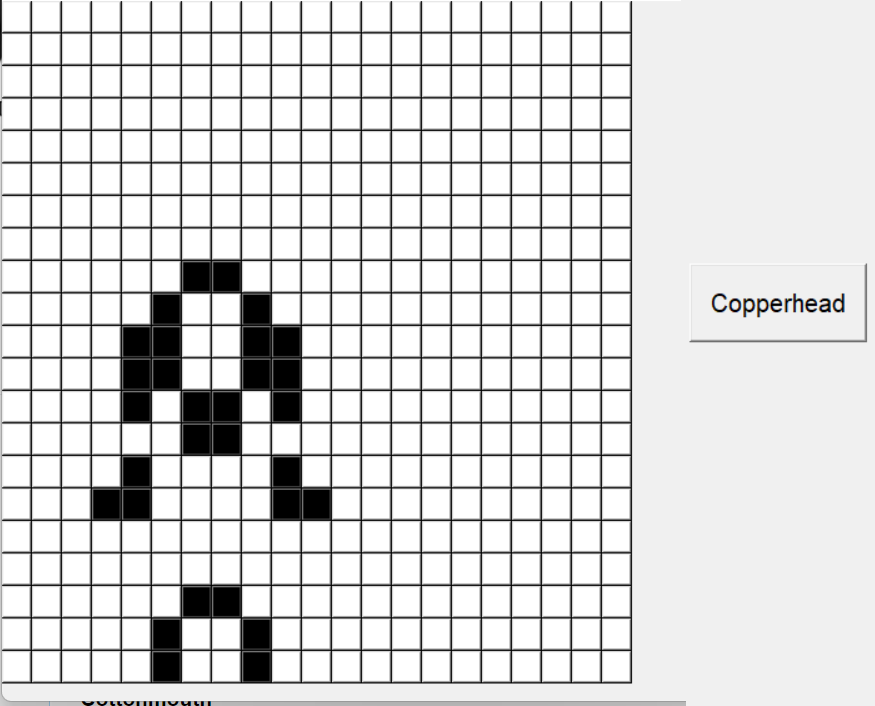
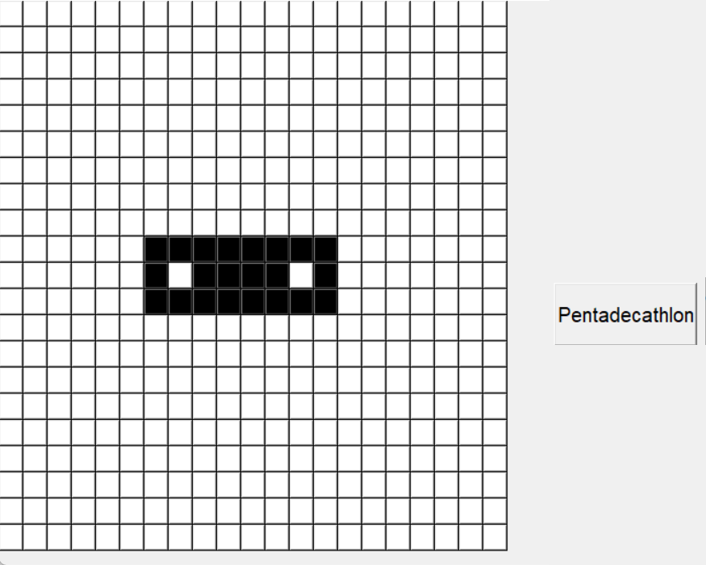
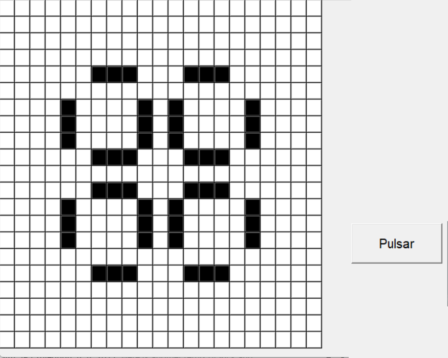
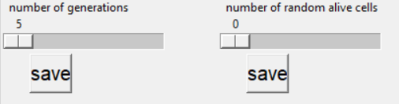
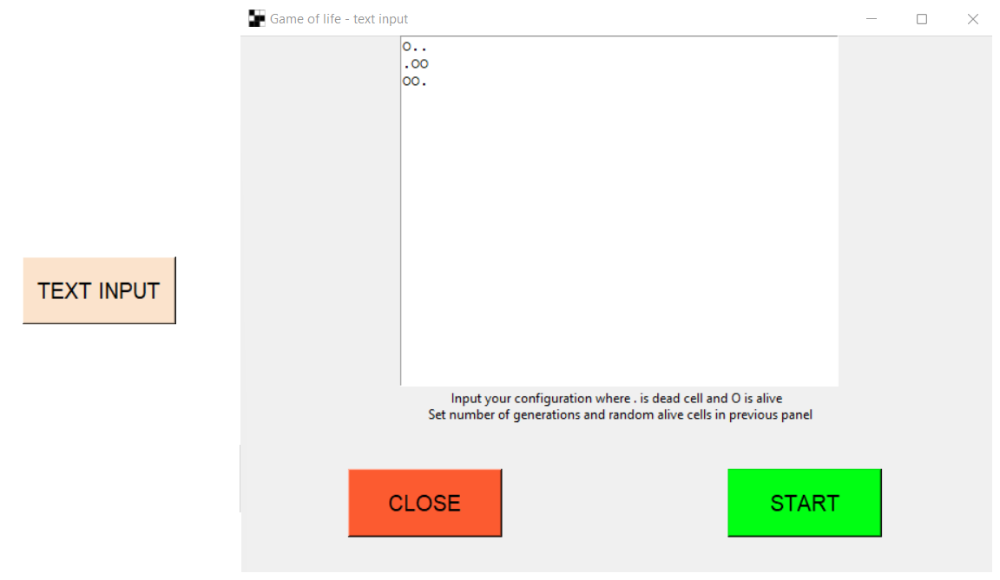
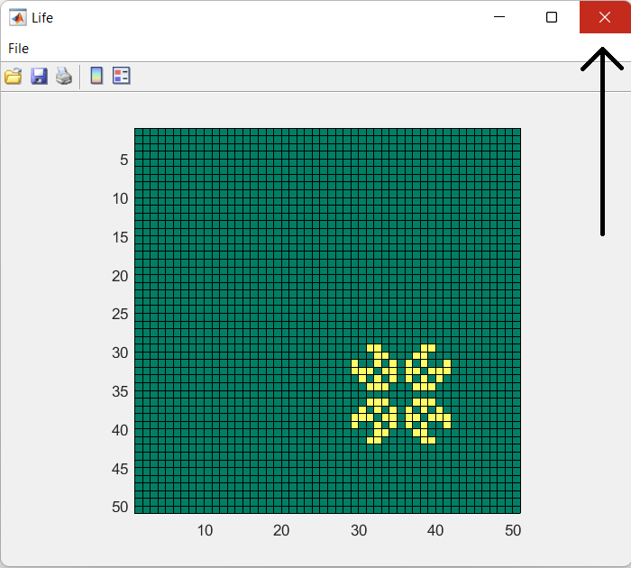

HRA ŽIVOTA
Hra života je celulární automat, který vymyslel britský matematik John Horton Conway v roce 1970.
Tato hra se hraje sama. Vše co můžete dělat je zadat původní konfiguraci a sledovat, jak se vyvýjí.
Tato aplikace potřebuje ke své funkci MATLAB runtime 9.9
Stáhni zde: https://www.mathworks.com/products/compiler/matlab-runtime.html
OVLÁDÁNÍ

Kliknutím na bílou(mrtvou) buňku, z ní uděláte černou(živou).
Tlačítko Start spustí vaši hru. Tlačítko Quit ukončí aplikaci.
Tlačítko Clear nastaví všechny buňky na bílou barvu.
Další tlačítka nastaví nějakou z předdefinovaných konfigurací pro hru, a to následovně:



Jsou zde též dva posuvníky. Jeden nastavuje počet tvořených generací(number of generations)
a druhý počet buněk, které se náhodně vytvoří jako živé (number of random alive cells)
Vaše zvolené hodnoty na posuvnících musí být potvrezeny talčítky "Save" pod nimi.

tlačítko TEXT INPUT otevře nové okno:

Zde můžete vkládat vaši konfiguraci v textovém formátu.
Znak O značí živou buňku a znak . značí mrtvou buňku.
Inspirovat se můžete zde: https://conwaylife.com/wiki/Category:Lists_of_patterns
Počet tvořených generací a počet náhodně generovaných buněk se nastavuje v předchozím okně pomocí posuvníků.
Tlačítko CLOSE okno zavře.
Tlačítko START spustí hru s vaší konfigurací.

Jakmile hra přestane vytvářet nové generace, ukončete okno křížkem v pravo nahoře.
PRAVIDLA
Vesmír Hry života je dvourozměrná síť čtvercových buňek. Každá z těchto buňek může být živá nebo mrtvá
Každá z buněk interaguje s jejími osmi sousedy. To jsou buňky připojeny vertikálně,horizontálně, či diagonálně
Každým krokem ve hře nastanou následující situace:
1. Každá živá buňka s méně než dvěma živými sousedy zemře.
2. Každá živá buňka se dvěma nebo třemi živými sousedy zůstává žít
3. Každá živá buňka s více než třemi živými sousedy zemře.
4. Každá mrtvá buňka s právě třemi živými sousedy oživne.
První generace je tvořena aplikací zmíněných pravidel pro všechny buňky zároveň.
Zrození i smrti buňek probíhají současně.
Každá generace je čistě funkcí té předchozí.
Pravidla se opakovaně pouívají, aby tvořila další a další generace.
Vytvořil: Josef Jehlička, Jakub Zamazal, Philip Otto, Petr Kareš
Pro: ČVUT v Praze, Fakulta stavební, Katedra geomatiky, V rámci předmětu Projekt informatika (PJIN)